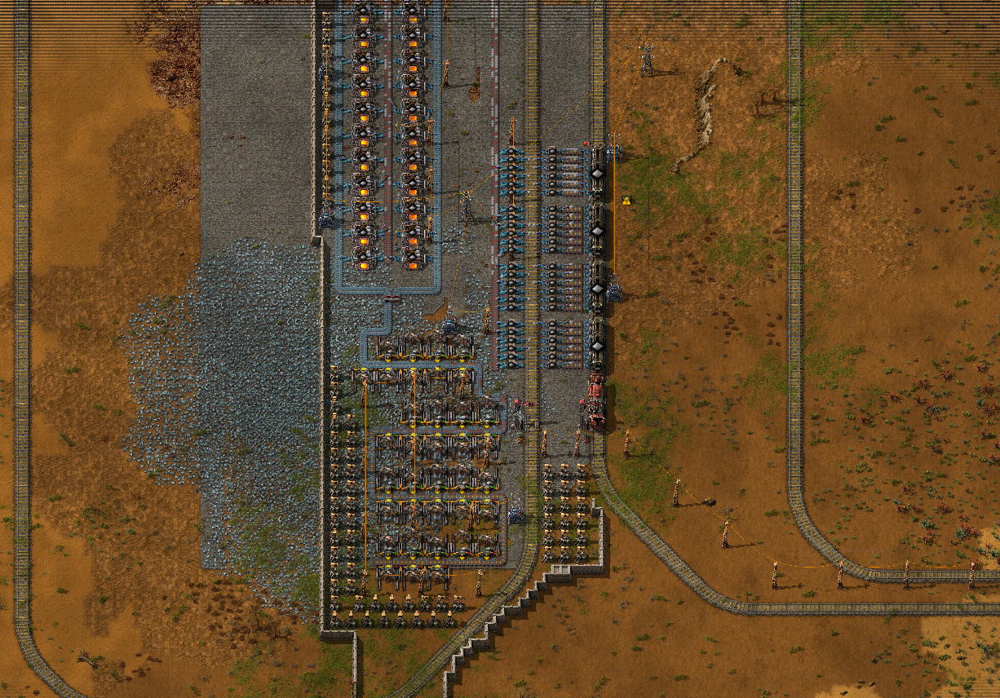
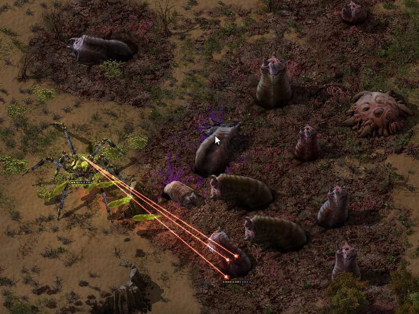

4 Эпоха (Поезда и Конец игры)
Часть 1 (производство)
Ресурсы не бесконечные и те залежи, которые вы нашли в начале игры начнут быстро иссекать, но на помощь приходят поезда! Теперь вы сможете отстраивать мини базы на дальних залежах и с помощью автоматизации и железных дорог подключать к основной базе. А с приходом чертежей и строительных роботов, постройка новых баз не составит труда, один клик по области и куча строительных роботов отстроит вам всё с нуля, только успевайте ресурсы подкидывать :)

Отдельная мини база
Часть 2 (Оборона)
Новые базы очень сильно будут подвержены нападениям, поэтому не забывайте о их защите лазерными турелями. Также вам довольно часто придётся выезжать на них и проверять степень защиты.
Часть 3 (Атака)
К этому моменту у вас должны быть изучены гаубицы и паукотрон. Против них кусаки не способны сражаться на равных, главное грамотно расположить предметы в сетку паукотрона и хорошо защитить гаубицы.

Аннигиляция кусак с помощью паукотрона